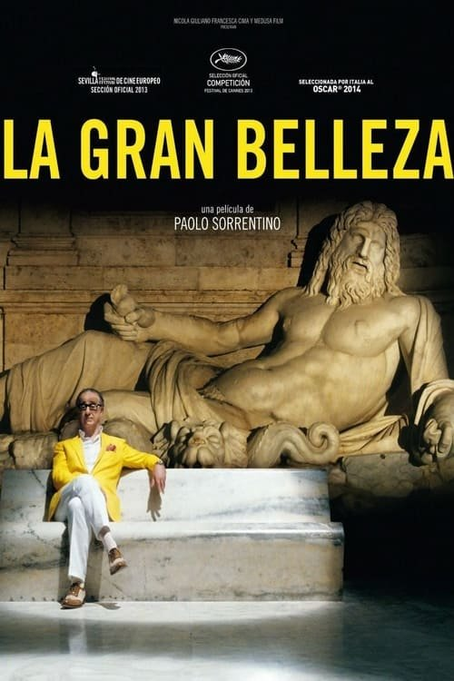

La gran belleza (2013)
Sinopsis Rápida
En la Roma decadente y opulenta, un escritor se embarca en un viaje de autodescubrimiento y desencanto, reflexionando sobre la vida, el amor y la muerte.
Sinopsis Detallada
Jep Gambardella, un escritor exitoso pero existencialmente vacío, navega por la superficialidad de la alta sociedad romana. La película explora temas de la vejez, la melancolía y la búsqueda de significado a través de una narrativa visualmente impactante y una atmósfera decadente. Las fiestas fastuosas contrastan con la profunda soledad del protagonista, creando una reflexión sobre la fragilidad de la vida y la vanidad humana. Acompañado por un elenco de personajes excéntricos, la película es un retrato inolvidable de la sociedad italiana contemporánea.
¿Por qué tenés que verla?
- Una exploración profunda y visualmente cautivadora de la condición humana.
- La dirección magistral de Paolo Sorrentino, con una estética única e impactante.
- Su influencia en el cine posterior y su estatus como obra maestra contemporánea.
- Una reflexión sobre el significado de la vida y la búsqueda de la felicidad.
Idea Extra
Análisis del simbolismo en 'La gran belleza': Descifrando las imágenes y metáforas.